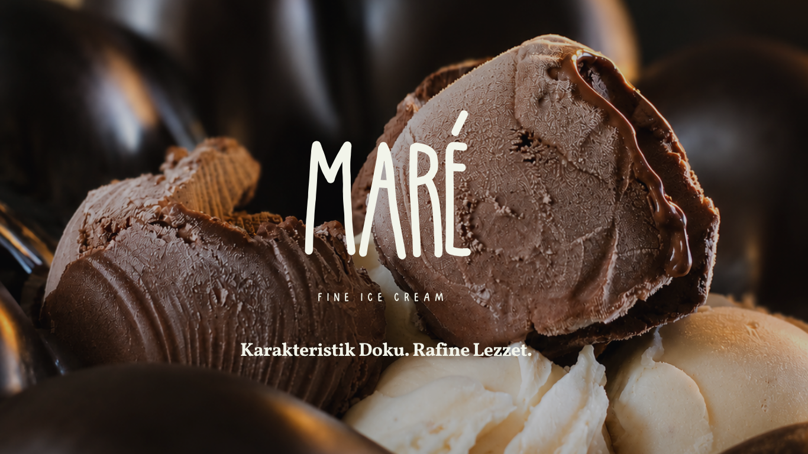
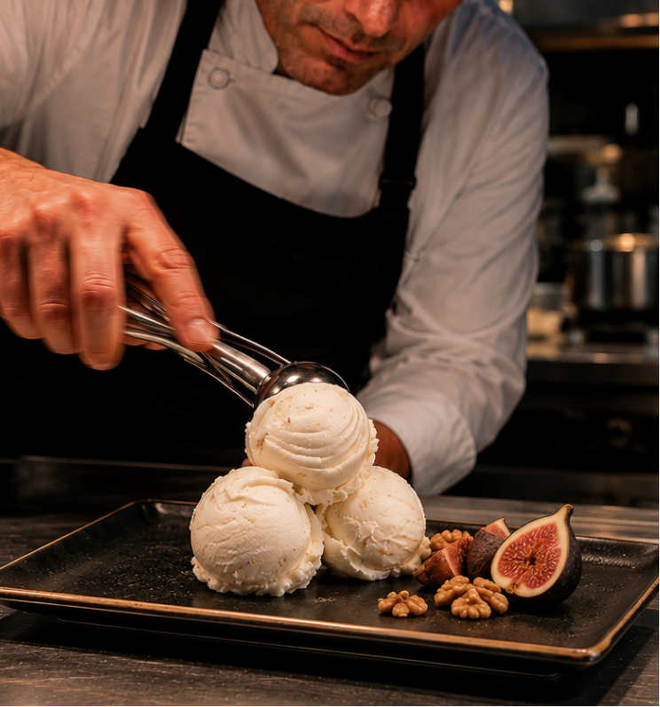
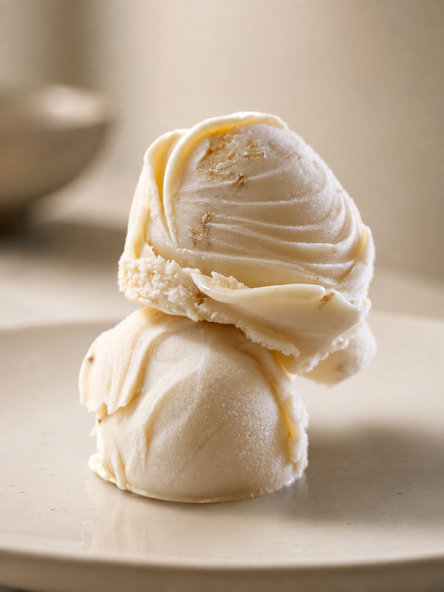
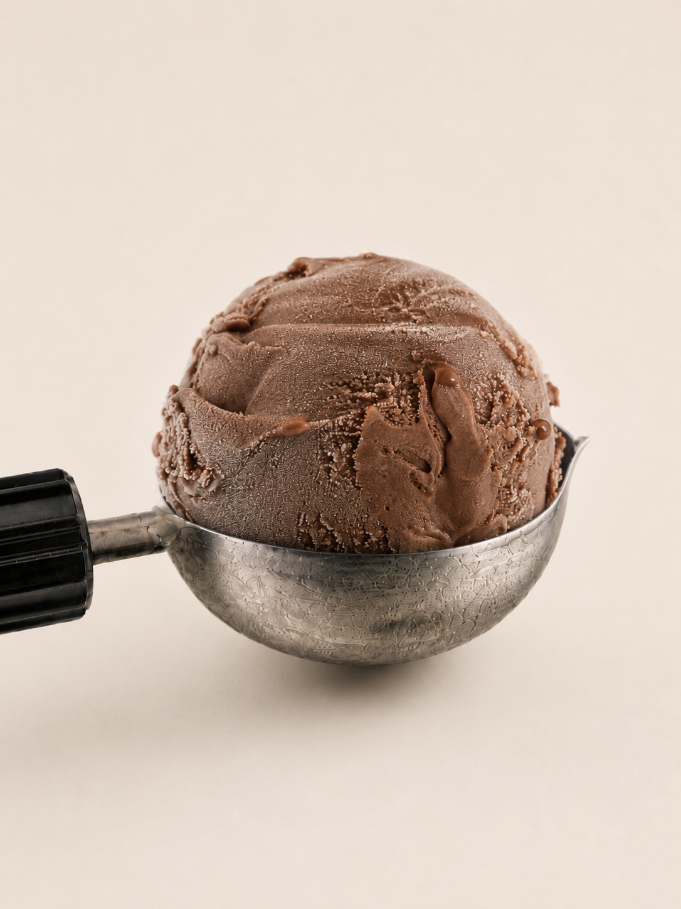
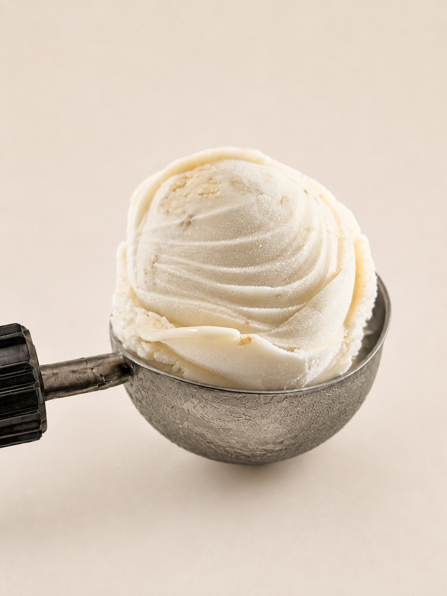
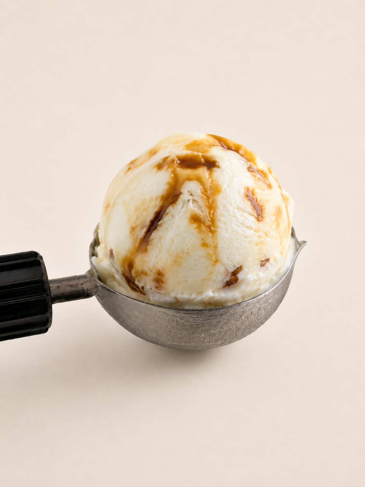
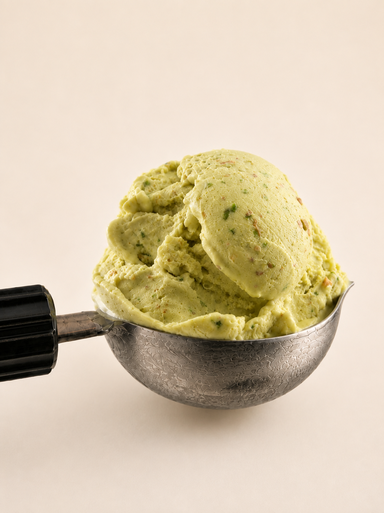
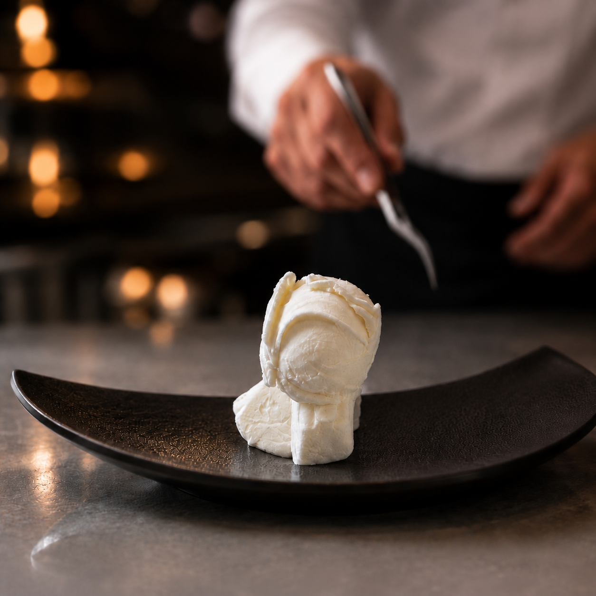
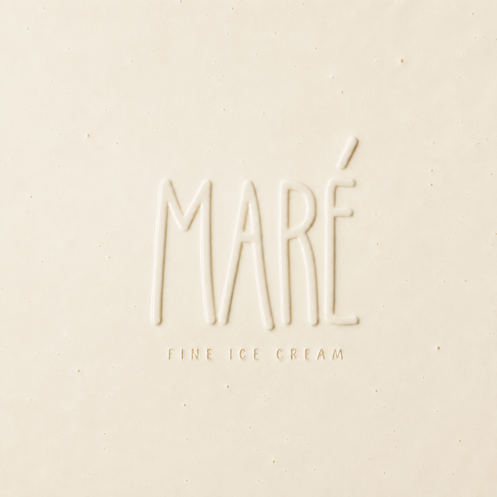

Keçi Sütlü Sade

MARÉ — Fine Ice Cream: Karakteristik Doku. Rafine Lezzet.
Hikâyemiz
MARÉ, geleneksel dondurma kültürünü çağdaş bir bakış açısıyla yeniden yorumlar. Doğal salep ile hazırlanan karakteristik dokusu ve özenle geliştirilen lezzetleriyle, seçkin ağırlama deneyimleri için üretilir.


Karakteristik Doku
Doğal salebin kazandırdığı yoğun ve kendine özgü yapı. Pürüzsüz dokusu ve rafine lezzetiyle MARÉ, her serviste karakterini ortaya koyar.
Lezzetler
Özenle seçilen içeriklerle geliştirilen MARÉ koleksiyonu, klasiklerden özgün reçetelere uzanan farklı lezzetlerden oluşur.

Duble Çikolata

İncir & Ceviz

Bal & Badem

Fıstıklı
Profesyonel İş Birlikleri
Ürün ve servis deneyiminde niteliği önemseyen profesyonel işletmelerle iş birlikleri geliştiriyoruz.
Restoranlar
Menü ve tatlı sunumlarına uyum sağlayan profesyonel servis çözümleri.
Oteller
Farklı servis noktaları ve ağırlama deneyimleri için geliştirilen ürün seçenekleri.
Beach Club & Özel Mekânlar
Konsepte ve servis biçimine uyum sağlayan seçkin dondurma koleksiyonu.

İletişim
- E-posta
- info@maredondurma.com
- Telefon
- [TELEFON NUMARASI EKLENECEK]
- @maredondurma
